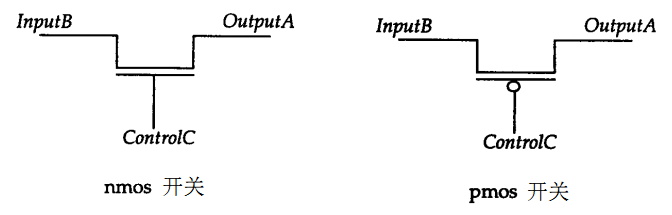

Palabras clave: MOS, CMOS, interruptor bidireccional, PAD
El modelado a nivel de interruptores es un diseño en un nivel de abstracción más bajo que el modelado a nivel de puertas. En raras ocasiones, el diseñador puede optar por utilizar transistores como módulos subyacentes del diseño. Con la creciente complejidad del diseño de circuitos y la aparición de herramientas avanzadas, el diseño digital basado en interruptores está entrando lentamente en su ocaso. Actualmente, Verilog solo proporciona capacidad de diseño digital utilizando valores lógicos 0, 1, x, z como intensidades de excitación relacionadas, por lo que los transistores en Verilog también se tratan simplemente como interruptores conductores o cortados.
Interruptor MOS
Hay 2 tipos de interruptores MOS, que se declaran con las siguientes palabras clave:
nmos（N 类型 MOS 管） pmos（P 类型 MOS 管） rnmos （带有高阻抗的 NMOS 管） rpmos（带有高阻抗的 PMOS 管）
Los transistores MOS se utilizan para modelar la lógica de interruptores. Los datos fluyen de la entrada a la salida, y el flujo de datos se puede abrir o cerrar mediante una configuración adecuada.
Los transistores MOS con impedancia tienen una alta impedancia de fuente a drenador y reducen la intensidad de la señal al transmitirla.
El diagrama de estructura del interruptor de transistor MOS se muestra a continuación.

Al instanciar, el primer puerto del transistor MOS es la salida, el segundo puerto es la entrada de datos y el tercer puerto es la entrada de control.
Ejemplo
pmos pmos1 (OUTX, IN1, CTRL1) ;
//no instantiation name
nmos (OUTX1, IN1, CTRL2) ;
La tabla de verdad del transistor MOS se muestra a continuación, muy similar a la puerta triestado.
| nmos | Terminal de control | pmos | Terminal de control | |||||||
|---|---|---|---|---|---|---|---|---|---|---|
| 0 | 1 | x | z | 0 | 1 | x | z | |||
| 0 | z | 0 | 0/z | 0/z | 0 | 0 | z | 0/z | 0/z | |
| 1 | z | 1 | 1/z | 1/z | 1 | 1 | z | 1/z | 1/z | |
| x | z | x | x | x | x | x | z | x | x | |
| z | z | x | x | x | z | x | z | x | x |
Interruptor CMOS
El interruptor CMOS se declara con las palabras clave cmos y rcmos (con alta impedancia).
CMOS tiene una salida de datos, una entrada de datos y 2 entradas de control. El diagrama esquemático es el siguiente:

Las señales PControl y Ncontrol suelen ser complementarias. Cuando la señal Ncontrol es 1 y PControl es 0, el interruptor conduce. Cuando Ncontrol es 0 y PControl es 1, la salida del interruptor es de alta impedancia. El interruptor CMOS puede considerarse como una combinación de interruptores NMOS y PMOS.
Al instanciar, el primer puerto del transistor CMOS es la salida, el segundo es la entrada de datos, el tercero es la entrada de control Ncontrol, y el cuarto es la entrada de control Pcontrol.
El formato de instanciación del interruptor CMOS es el siguiente.
Ejemplo
cmos c1 (OUTY, IN1, NCTRL, PCTRL) ;
//no instantiation name
cmos (OUTY1, IN1, NCTRL, PCTRL) ;
Dado que CMOS puede considerarse como una combinación de interruptores NMOS y PMOS, también se pueden usar estos dos tipos de interruptores MOS para construir un interruptor CMOS, como sigue:
Ejemplo
nmos n2 (OUTY, IN1, NCTRL) ;
pmos p2 (OUTY, IN1, PCTRL) ;
La tabla de verdad de CMOS es similar a la del interruptor MOS; observe la complementariedad de las señales Ncontrol y Pcontrol.
Interruptor bidireccional
Las puertas de interruptores NMOS, PMOS y CMOS conducen del drenador a la fuente, y la dirección es unidireccional. Verilog también proporciona dispositivos de interruptor que conducen en ambas direcciones; los datos pueden fluir en ambos sentidos, y las señales de ambos lados pueden ser señales de excitación.
Las declaraciones de palabras clave para el interruptor bidireccional y su modo de impedancia son las siguientes:
tran tranif1 tranif0 rtran rtranif1 rtranif0
El diagrama de estructura del interruptor bidireccional es el siguiente:

El interruptor tran es un búfer directo entre dos señales; inout1 o inout2 pueden ser la señal de excitación.
tranif1 solo conduce las señales de ambos lados del interruptor cuando la señal control es 1. Cuando control es 0, las dos señales se desconectan; la señal con fuente de excitación mantiene el mismo valor lógico que la fuente, y la señal sin fuente de excitación presenta un estado de alta impedancia.
tranif0 es análogo.
Por lo tanto, los interruptores bidireccionales se utilizan a menudo para aislar buses o señales.
Al instanciar, el interruptor bidireccional
tiene los dos primeros puertos como terminales de datos, y el tercer puerto como terminal de entrada de control.
A continuación se muestra un ejemplo de instanciación del interruptor bidireccional:Ejemplo
//no instantiation name
tranif1 (inout1, inout2, control) ;
Alimentación y tierra
Los circuitos a nivel de transistor requieren el terminal de fuente (Vdd, lógica 1) y el terminal de tierra (Vss, lógica 0), que se definen con las palabras clave supply1 y supply0, respectivamente. El uso es el siguiente:
Ejemplo
supply0 GND ;
wire siga = VDD ; //siga is connected to logic 1
wire sigb = GND ; //sign is connected to logic 0
Simulación del modelo PAD
En la sección «5.1 Módulos y puertos de Verilog» del «Tutorial de Verilog», se trató la escritura y simulación del modelo PAD. A continuación, se remodela el modelo PAD utilizando puertas triestado, con las funciones de pull-up y pull-down fijas, y se utiliza el interruptor bidireccional para probar la conectividad del PAD.
El modelo de pad con función pullup escrito con puertas triestado es el siguiente; para el modelo de pad con función pulldown, simplemente cambie los comentarios.
Ejemplo
//DIN, pad driver when pad configured as output
//OEN, pad direction(1-input, o-output)
input DIN, OEN ,
inout PAD ,
//pad load when pad configured as input
output DOUT
);
//input:(not effect pad external input logic), output: DIN->PAD
bufif0 (PAD, DIN, OEN) ; //0-output
bufif1 (DOUT, PAD, OEN) ; //1-input
pullup (PAD);
//pulldown (PAD); //pulldown
endmodule
El testbench que utiliza interruptores bidireccionales para controlar la conectividad de E/S del PAD se escribe de la siguiente manera.
El flujo de prueba es: PAD0/1 se interconectan; luego PAD0 actúa como salida y PAD1 como entrada, se impulsa PAD0 y se lee el valor de PAD1. Después, las direcciones de ambos se invierten, se impulsa PAD1 y se lee el valor de PAD0.
El proceso de prueba de PAD2/3 es exactamente el mismo.
Ejemplo
module test ;
parameter PULL_UP = 1 ;
parameter PULL_DOWN = 0 ;
parameter IO0_OUT = 0 ;
parameter IO1_OUT = 1 ;
parameter IO2_OUT = 2 ;
parameter IO3_OUT = 3 ;
parameter IO0_IN = 0 ;
parameter IO1_IN = 1 ;
parameter IO2_IN = 2 ;
parameter IO3_IN = 3 ;
reg [3:0] DIN, OEN ;
wire [3:0] DOUT ;
wire [3:0] PAD ;
//test connection control, using tranif1
reg [1:0] con_ena ;
tranif1 (PAD[0], PAD[1], con_ena[0]);
tranif1 (PAD[2], PAD[3], con_ena[1]);
reg err = 0;
task test_io_conn;
//test pull
input pull_type ;
//test conn
input [1:0] xout ; //output postion
input [1:0] yin ; //output postion
DIN[xout] = ~pull_type ;
# 20 ;
if (DOUT[yin] != ~pull_type) begin
$display("write value and get value is: %h, %h", ~pull_type, DOUT[yin]);
err |= 1 ;
end
DIN[xout] = pull_type;
# 20 ;
if (DOUT[yin] != pull_type) begin
$display("write value and get value is: %h, %h", pull_type, DOUT[yin]);
err |= 1 ;
end
endtask
initial begin
con_ena = 2'b01 ;
OEN = 4'b1111 ;
#13 ;
//test between io0/io1
OEN[0] = 0 ;
OEN[1] = 1 ; //gpio0 -> gpio1
test_io_conn(PULL_UP, IO0_OUT, IO1_IN);
OEN[1] = 0 ;
OEN[0] = 1 ; //gpio0 -> gpio1
test_io_conn(PULL_UP, IO1_OUT, IO0_IN);
OEN = 4'b1111 ;
con_ena = 2'b10 ;
OEN[2] = 1'b0 ;
OEN[3] = 1'b1 ;
test_io_conn(PULL_DOWN, IO2_OUT, IO3_IN);
OEN[3] = 1'b0 ;
OEN[2] = 1'b1 ;
test_io_conn(PULL_DOWN, IO3_OUT, IO2_IN);
end
PADUP u_pad_up0( DIN[0], OEN[0], PAD[0], DOUT[0]) ;
PADUP u_pad_up1( DIN[1], OEN[1], PAD[1], DOUT[1]) ;
PADDOWN u_pad_down3( DIN[2], OEN[2], PAD[2], DOUT[2]) ;
PADDOWN u_pad_down4( DIN[3], OEN[3], PAD[3], DOUT[3]) ;
initial begin
forever begin
#100;
//$display("---gyc---%d", $time);
if ($time >= 1000) begin
$finish ;
end
end
end
endmodule // test
Los resultados de la simulación son los siguientes.
Como se muestra en la figura, dentro de 13ns, cuando los 4 PAD son entradas, los valores de PAD corresponden a la función pull, es decir, PAD0-1 tienen función de pull-up, y PAD2-3 tienen función de pull-down.
Dentro de 13-53ns, PAD0 es la salida, PAD1 es la entrada y están conectados, por lo que los valores lógicos de ambos cambian de manera consistente. De manera similar, dentro de 53ns-93ns, PAD1 es la salida, PAD0 es la entrada, y en estado conectado los valores lógicos también son consistentes. Esto indica que las funciones de entrada y salida de PAD0/1 son normales.
Los resultados de PAD2/3 son similares y no se explicarán aquí.